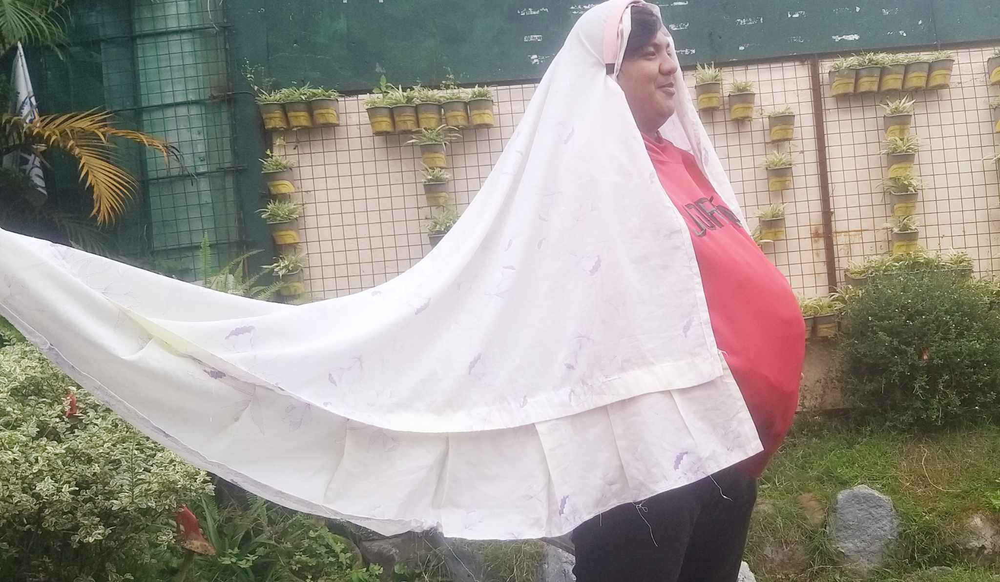

November 16, 2024
Teenage pregnancy is when a woman under 20 gets pregnant. It usually refers to teens between the ages of 15-19.
But it can include girls as young as 10. It's also called teen pregnancy or adolescent pregnancy.
Teenage pregnancy is a global health issue, causing complications and death rates higher than older women. Physically less developed teens are particularly vulnerable, potentially leading to intergenerational poverty and ill-health.
Teenage pregnancy has been recently alarming because of the increasing rates around the world. In this blog, we will be presenting and showing you what are the causes, challenges, risks and how to avoid and deal with this situation.
Teenage pregnancy rates are falling in many high-resource settings, but for those who do conceive, the socioeconomic and educational disadvantage that ensues is often long lasting and intergenerational.
The adverse maternal and neonatal outcomes can be ameliorated through antenatal and postnatal care that attends to the special needs of this group.

What are the reasons and/or causes of Teenage Pregnancy?
Lack of Sex education
- Eventually, this is one of the main reasons why teenage pregnancy is occuring globally. Thats why some gobernments facilities and organizations advocates safe sex education and provides information and knowledge about teenage pregnancy.
Victims of Sexual Violence
- Sadly, this are one of the reasons why teenage pregnancy also occur. Some adolescents around young age experienced such cruelty that leads to another problem.
Peer pressure
- Peer pressure is another major cause of sexual abuse, often females may be pressured or forced by an older partner. Negative peer pressure has been identified to be a contributing factor to teenage pregnancy.
Media Influence
- The media has a large effect on teen pregnancy, especially shows such as "Teen Mom" and "16 and Pregnant". This types of shows often glamorize or romanticize Teenage pregnancy thats why some youth can be influence by thinking that being pregnant at a young age is okay but eventually, its not.
Alcohol and Drugs
- In relation to Peer pressure, Drugs and Alcohol is also one of the reasons why this issue is still occuring. Because of the influences and pressure that a person received from a friend group they tend to do whatever that person says in order to stay in that group or to satisfy that person who forces you
While we show the preventions and how to avoid teenage pregnancy we also have to know how to support and help people who are experiencing it. The following taht are written below are the things that we should do to help and support Teenage Mothers.
Get regular prenatal care
- Seeing an obstetrician regularly helps both mother and baby stay healthy. It also lessens the risk for labor and delivery complications.
Find parenting classes
- It's a good idea to start classes during pregnancy so your child can learn how to take care of a baby before it arrives. Getting educated will also help your child manage the transition to parenthood more smoothly. And because parent-child interactions are so important, especially during the first three years, keeping up these classes benefits everyone.
Prioritize school
- Encourage your child to get a high school diploma and then a trade school or college degree. This will give your child confidence and help them support their child.
Connect with community programs
- There are many government and community programs and resources out there designed to help parents and young children, such as:
- Counseling
- Healthcare
- Healthcare
HOW TO AVOID TEENAGE PREGNANCY
Comprehensive sex education and access to birth control appear to reduce unplanned teenage pregnancy. It is unclear which type of intervention is most effective.
Assistance or support is also proven that can help to avoid this situation.
For sexually active adolescents, they may use contraceptives such as pills, condoms and any ither devices that may prevent pregnancy.
4
Supervise and monitor your children’s activities.
Know where your children are at all times. Are they safe? What are they doing? Are they involved in useful activities? If they aren’t with you, are responsible adults supervising them? You may be accused of being too snoopy, but you can help your children understand that parents who care know where their kids are.
5
Help your teens have options for the future that are much more attractive than early pregnancy and parenthood.
Help them set real, meaningful goals for their future. Talk with them about what they will need to do to reach their goals, and help them reach these goals. Help them see how becoming a parent can derail the best of plans. For example, child care expenses can make it almost impossible to afford college.
Help them learn to use their free time in constructive ways—being sure they set aside time to do their homework.
6
Programs and National Services for young mothers
Community service like Early Intervention Program can help teach them job skills, and can put them in touch with a variety of committed and caring adults. Government and other organizations offers alot of opportunities for young mothers.